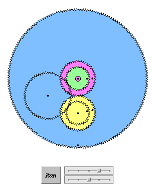

With Java animations by Bill Casselman
|
4. The differential in the Antikythera MechanismThe differential gear assembly in the Antikythera Mechanism.
Most differentials are
three-dimensional, using bevel gears to connect the two coaxial
gears to the pinions.
The Antikythera
Mechanism incorporates an ingenious planar differential.
The blue output gear carries the pinion, just as in modern
differentials. The topological problem of having two coaxial
planar gears meshing at the same rate with a third is solved by
having a two-tier pinion.
The larger gear on the pinion is the same size as the
larger of the coaxial gears (here, purple); the smaller
is the same size as the smaller coaxial gear (here, green).
(In fact the size of the pinion is immaterial to the
functioning of the differential, just as in the straight-line
and elementary rotary versions; only the ratio of the two
pinion gears must be the same as the ratio of the two coaxials.)
The green gear and the
pinion mesh via an "idler" gear, shown as transparent in the gearing
diagram above. The idler allows the purple and green
gears to contribute opposite rotations to the pinion.
This is how the straight-line differential worked:
the upper rack turned the pinion clockwise, while the lower
rack turned it counterclockwise. So the same relation will
hold between the speeds of the purple, green and blue gears:
blue is one-half of the sum of purple and green. The differential was built into the the Antikythera mechanism so as to subtract the rotation of the Sun from the rotation of the Moon. This is why it was convenient to have the sun-gear turning in the opposite direction from the sun's motion (see The Sun-Moon Assembly): the output of the differential will be one-half of the difference between the Moon's motion and the Sun's. This is exactly (one half) the rate of change of the phase of the Moon, since during the month the phase of the Moon (new, first-quarter, full, last quarter, ...) indicates exactly its relative position in the sky with respect to the sun. The gear train which appears just below the differential in the gear plan meshes with the blue gear and has as as one of its outputs this relative motion multiplied by a factor of two; this would give a gear which performed exactly one rotation in a synodical month, the time for a full cycle of the Moon's phases. This gear may have been used to turn a dial or an indicator to show the phase of the Moon. Unfortunately the dials on the back of the Antikythera Mechanism, where this information would have been displayed, are gone. |
|
This is a Java animation, by Bill Casselman, of the
differential assembly in the Antikythera Mechanism.
Top slider controls the green (Moon) gear;
bottom slider controls the purple (Sun) gear.
In the Mechanism itself, these inputs were not
independent, since they were fixed by the Sun-Moon
assembly in the ratio 254 to 19. Begin Java animation: GO. |
 | The complete ranges of speeds show that, taken out of the Mechanism, this is a true differential. The next one known was invented in the 19th century. To simulate its operation inside the Mechanism, choose moon-gear speed +2 and sun-gear speed -1/8. This will give a ratio of 16, while the actual ratio of speeds was 254/19 = 13.368... . |